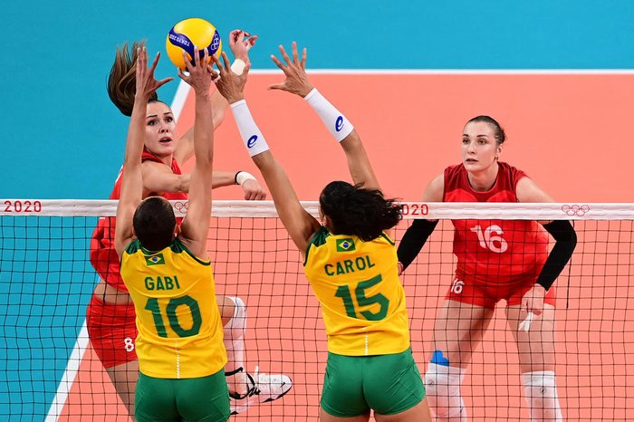

O voleibol foi inventado em 9 de Fevereiro de 1895 por William George Morgan nos Estados Unidos da América. O objetivo de Morgan, que trabalhava na ACM de Holyoke no Massachusetts, era criar um esporte de equipes sem contato físico entre os adversários de modo a minimizar os riscos de lesão. Voleibol é um esporte praticado numa quadra dividida em duas partes por uma rede, possuindo duas equipes de seis jogadores em cada lado. O voleibol foi originalmente chamado de Mintonette, devido à sua semelhança com o Badminton
O objetivo usado para a prática de vôlei é uma bola e o objetivo principal do jogo consiste na marcação de pontos ao mandar a bola para o campo adversário e fazer com que ela toque o chão. A instituição responsável pela organização de eventos e da regulação das regras é a FIVB, Fédération Internationale de Volleyball.
Os fundamentos são as técnicas e habilidades usadas pelos jogadores. Os principais fundamentos são: o saque, a recepção ou passe, o levantamento, o ataque (cortada), o bloqueio e a defesa.
Clique aqui para acessar o site a cbv